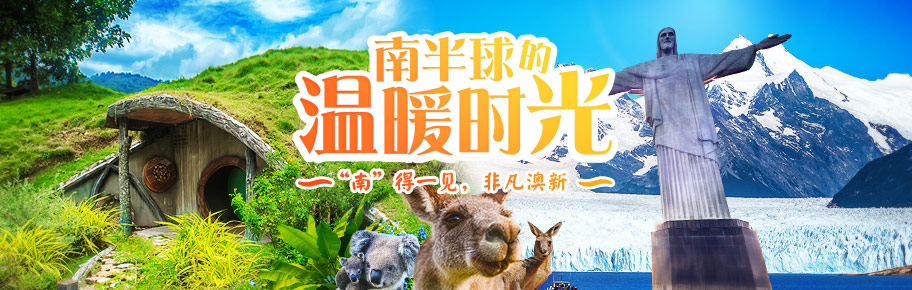
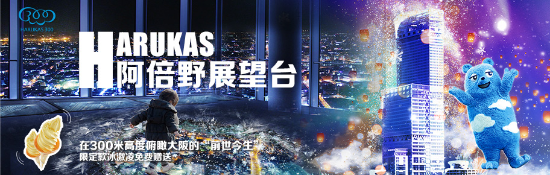

<!DOCTYPE html>
<html lang="en">

<head>
    <meta charset="UTF-8">
    <meta name="viewport" content="width=device-width, initial-scale=1.0">
    <title>渐隐轮播图</title>
    <link rel="stylesheet" href="css/reset.css">
    <script src="js/jquery.min.js"></script>
    <script src="js/animate.js"></script>
</head>
<style>
    .container {
        margin: 50px auto;
        width: 912px;
        height: 290px;
        position: relative;
        overflow: hidden;
    }

    .container .wrapper {
        position: absolute;
        top: 0;
        left: 0;
        height: 100%;
        width: 100%;
    }

    .container .wrapper .slide {
        position: absolute;
        top: 0;
        left: 0;
        z-index: 0;
        width: 100%;
        height: 290px;
        overflow: hidden;
        opacity: 0;
    }

    .container .wrapper .slide:nth-of-type(1) {
        z-index: 1;
        opacity: 1;
    }

    .container .wrapper .slide img {
        display: block;
        width: 100%;
        height: 100%;
    }

    .container .focus {
        position: absolute;
        padding: 4px;
        height: 12px;
        left: 50%;
        transform: translateX(-50%);
        /*translateX(-50%)水平位移50%，让他在不固定宽度的情况下实现水平居中*/
        bottom: 10px;
        z-index: 999;
        background: rgba(0, 0, 0, .5);
        border-radius: 10px;
        /*让他为盒子高度的一半可以把盒子修改成椭圆*/
        font-size: 0;

    }

    .container .focus li {
        width: 12px;
        height: 12px;
        border-radius: 50%;
        margin: 0 4px;
        display: inline-block;
        /*父级元素添加font-size: 0可以消除空格加间距*/
        background-color: #ffffff;
        cursor: pointer;
    }

    .container .focus li.active {
        background-color: tomato;
    }

    .container .arrow {
        display: none;
        position: absolute;
        z-index: 999;
        top: 50%;
        transform: translateY(-50%);
        width: 26px;
        height: 45px;
        background: url("images/per.png") no-repeat;
        opacity: 0.5;
    }

    .container .arrow:hover {
        opacity: 1;
    }

    .container .arrow.arrowLeft {
        left: 5px;
        background-position: 0 -2px;
    }

    .container .arrow.arrowLeft:hover {
        left: 5px;
        background-position: -50px -2px;
    }

    .container .arrow.arrowRight {
        right: 5px;
        background-position: -24px -2px;
    }

    .container .arrow.arrowRight:hover {
        right: 5px;
        background-position: -74px -2px;
    }
</style>

<body>
    <section class="container" id="container">
        <div class="wrapper">
            <!-- <div class="slide"></div>
            <div class="slide"></div>
            <div class="slide"></div>
            <div class="slide"></div> -->
        </div>
        <ul class="focus">
            <!-- <li class="active"></li>
            <li></li>
            <li></li>
            <li></li> -->
        </ul>
        <a href="javascript:;" class="arrow arrowLeft"></a>
        <a href="javascript:;" class="arrow arrowRight"></a>
    </section>
</body>
<script>
    $(function () {
        let bannerModel = function () {
            let $con = $('#container'),
                $wrapper = $con.children('.wrapper'),
                $focus = $con.children(".focus"),
                $arrowL = $con.children('.arrowLeft'),
                $arrowR = $con.children('.arrowRight'),
                $slideList = null,
                $focusList = null;
            let _index = 0, //当前展示的索引
                _lastIndex = 0, //上一次展示的索引
                _Timer = null, //定时器
                _interval = 5000, //每次切换的时间
                _speed = 200; //多久切换一次

            function queryData() {
                return new Promise((resolve, reject) => {
                    $.ajax({
                        url: 'json/banner.json',
                        method: 'get',
                        async: true,
                        dataType: 'json',
                        success: resolve,
                        error: reject
                        /*success: (data) => {
                            resolve(data);
                        },
                        error: (msg) => {
                            reject(msg)
                        }*/
                    })
                })
            }

            function bindHtml(data) {
                let slideStr = ``,
                    focusStr = ``;
                $.each(data, (index, item) => {
                    let {
                        img,
                        desc
                    } = item;
                    slideStr += `<div class="slide"></div>`;
                    focusStr += `<li class="${index===0?'active':''}"></li>`
                })
                $wrapper.html(slideStr);
                $focus.html(focusStr);
                $slideList = $wrapper.children('.slide');
                $focusList = $focus.children('li');
            }

            function autoMove() {
                _index++;
                if (_index >= $slideList.length) {
                    _index = 0
                };
                changSlide();
            }

            function changeFocus() {
                $focusList.eq(_index).addClass('active');
                $focusList.eq(_lastIndex).removeClass('active');
            }

            function changSlide() {
                //开始变化之前让上一张的zIndex变为0，防止最后一张切换到第一张时出现zIndex相同显示最后一张图的问题
                //保证当前展示的图片层级最高 
                let $cur = $slideList.eq(_index),
                    $last = $slideList.eq(_lastIndex);
                $cur.css('zIndex', 1);
                $last.css('zIndex', 0);
                $cur.stop().animate({
                    opacity: 1
                }, _speed, () => {
                    //动画结束后让上一个图片的，opacity为0，为了下一次展示图片的opacity不是直接变成1的
                    $last.css({
                        opacity: 0
                    });
                    //把当前处理完成的_index作为下一次处理的_lastIndex
                    _lastIndex = _index;
                });
                changeFocus();
            }

            function handleMouse() {
                $con.on('mouseenter', function () {
                    clearInterval(_Timer);
                    //add是在一个JQ集合中增加一些新的元素
                    $arrowL.add($arrowR).css('display', 'block');
                }).on('mouseleave', function () {
                    _Timer = setInterval(autoMove, _interval);
                    $arrowL.add($arrowR).css('display', 'none');
                })
            };

            function handleArrow() {
                $arrowR.on('click', autoMove);
                $arrowL.on('click', () => {
                    _index--;
                    if (_index < 0) {
                        _index = $slideList.length - 1;
                    }
                    changSlide();
                })
            }

            function handleFocus() {
                $focusList.on('click', function anonymous() {
                    let curIndex = $(this).index();
                    //当前展示的和点击的是同一个，不执行任何操作
                    if (_index === curIndex) {
                        return;
                    }
                    _index = curIndex;
                    changSlide();

                })
            }
            return {
                init() {
                    let promise = queryData();
                    promise.then(
                        (data) => {
                            bindHtml(data);
                            _Timer = setInterval(autoMove, _interval);
                            handleMouse();
                            handleArrow();
                            handleFocus();
                        }
                    );
                }
            }
        }();
        bannerModel.init();
    });
</script>

</html>